artificial intelligence
computational linguistics
"In order for linguistics to be a science, linguists have to develop a formal theory which can characterize all and only those utterances which belong to a language [...] furthermore we need to make clear how the choice of a theory relates to linguistic evidence (data)."
- Chomsky
three alternatives
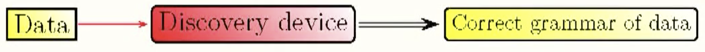
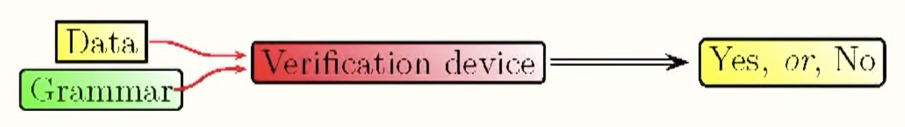
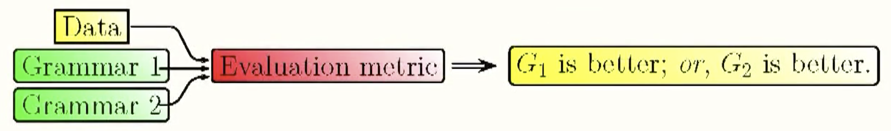
generative grammar approach
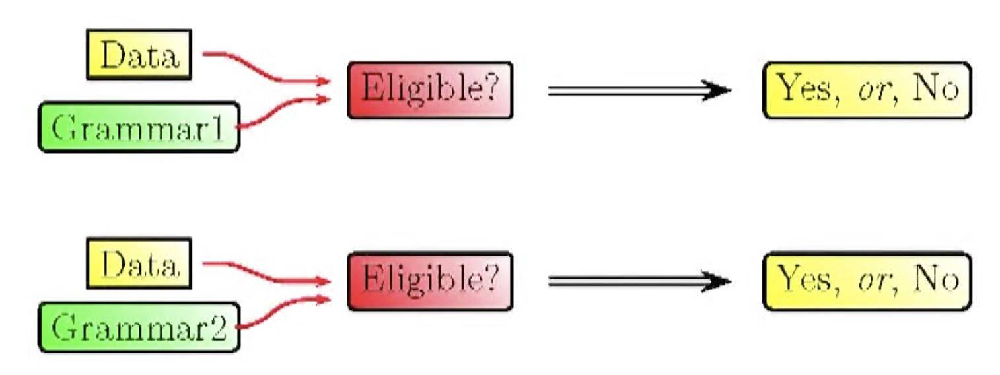
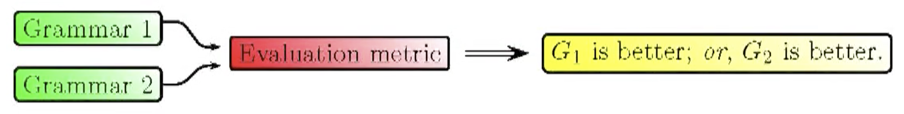
why?
- first two options seemed intractable at the time
- lack of sophisticated machine learning theory
- Chomsky's appreciation of formal logic
Chomsky's generative grammar program is basically a variation on the third option
With the advent of machine learning, and recently deep learning, an opportunity arises to attack the first (strongest) case in Chomsky's options for what a linguistic theory should do.
in our case:
- theory = deep neural language model
- data = raw corpus of natural language text
"You shall know a word by the company it keeps"
- John Rupert Firth (1957)
\[ p(w_1, w_2, \dots, w_T) \]
\[ = \prod_{t=1}^{T} p(w_t \mid w_1, w_2, \dots, w_{t-1}) \]
forward - backward - masked
EVERYTHING SHOULD BE MADE AS ?
? AS POSSIBLE BUT NO SIMPLER
EVERYTHING SHOULD BE MADE AS ? AS POSSIBLE BUT NO SIMPLER
NSP
SENTENCE 1: What do you mean you've never been to Alpha Centauri?
SENTENCE 2: For heaven's sake mankind, it's only four light years away you know.
LABEL: IsNext
SENTENCE 1: What do you mean you've never been to Alpha Centauri?
SENTENCE 2: You have said the exact truth, Socrates.
LABEL: NotNext
Different datasets and tasks tend to emphasize particular areas of natural language (semantics, syntax, pragmatics, logical reasoning, ...). Representations trained on the general task of language modeling bring improvements to a variety of other tasks.
examples of NLP tasks
- Natural Language Understanding (e.g. reading comprehension)
- Natural Language Inference (e.g. relation identification)
- Machine Translation
- Constituency Parsing
- Language Modeling
SQuAD
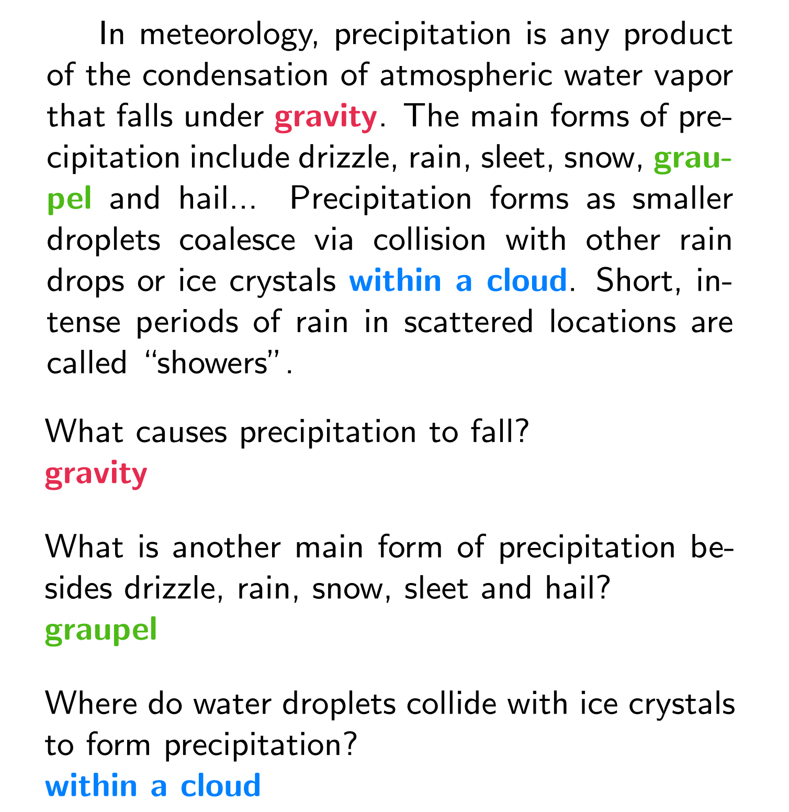
SNLI
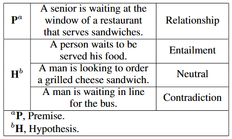
constituency parsing
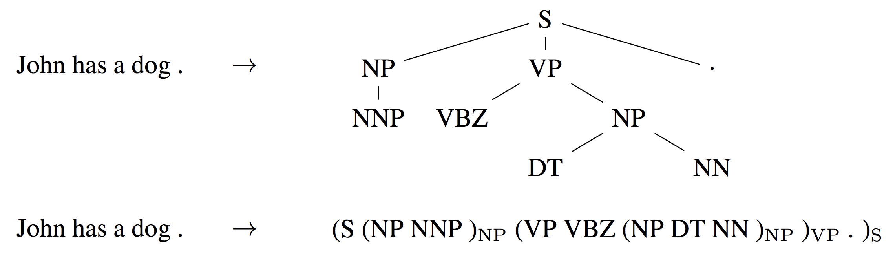
vector space embeddings
"I think that people who assumed thoughts are symbolic expressions made a huge mistake. What comes in is a string of words, and what comes out is a string of words. Because of that strings of words were the obvious ways to represent things, and they thought that what goes on in between was some formal sequential language like a string of words. I think that what's between is nothing like a string of words. I believe that the idea that thoughts must be in some kind of language is as silly as the idea that understanding the layout of a spacial scene must be in pixels. However, what's in between isn't pixels or symbolic expressions. I think thoughts are these high dimensional vectors that have causal powers - they cause other vectors, which is utterly unlike the standard view involving symbolic calculi."- Geoffrey Hinton
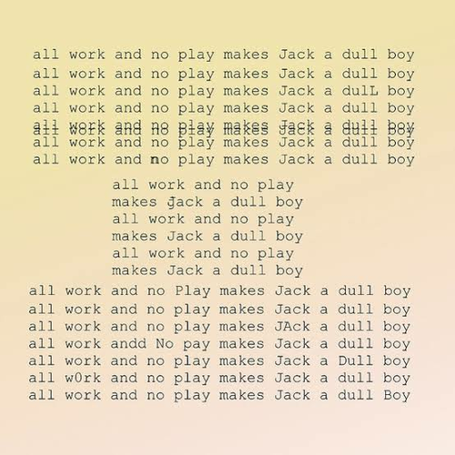
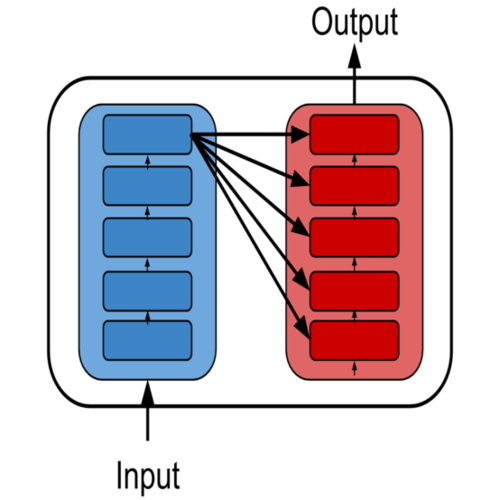
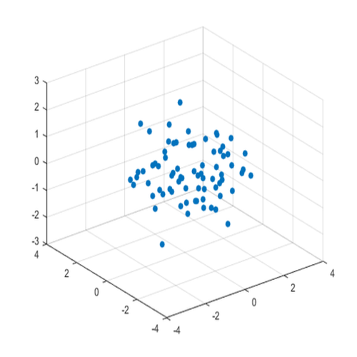
the shape of language
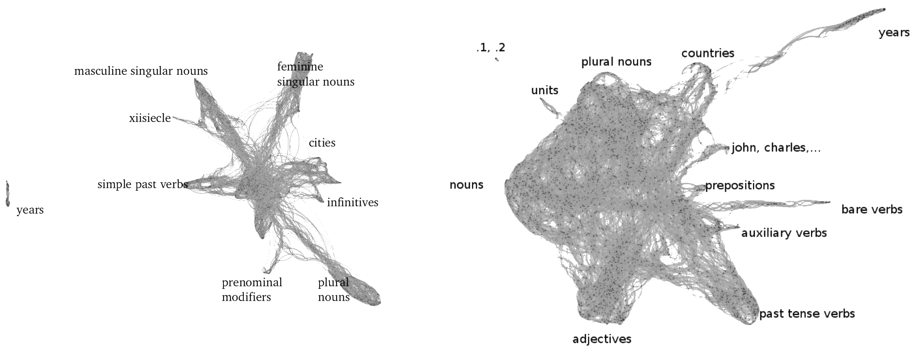
distributed representations
how would you represent words as vectors?
- integer (no similarity, not very useful - basically just renaming)
- one-hot (no similarity, no useful linear algebra, basically same as the former)
- count statistics (sparse, no interesting subspace structure)
- ...
- continuous real vectors! (similarity, subspaces, manifolds, ...)
word2vec
- inspired by a longer tradition of research in vector space embeddings of words (context based, spectral methods...)
- really an umbrella term for several algorithms (two main approaches: CBOW, skipgram)
cbow / skipgram
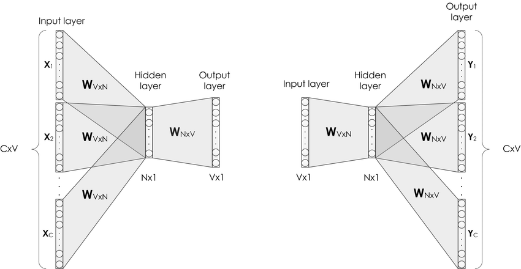
CBOW
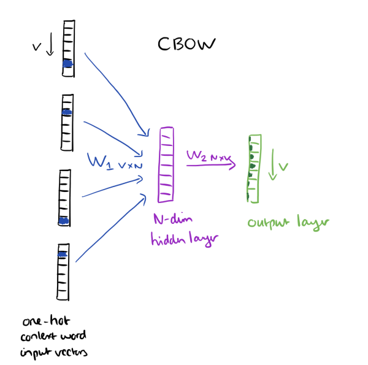
Continuous Bag of Words: predict a missing word from its context (maximize the probability of that word).
skipgram
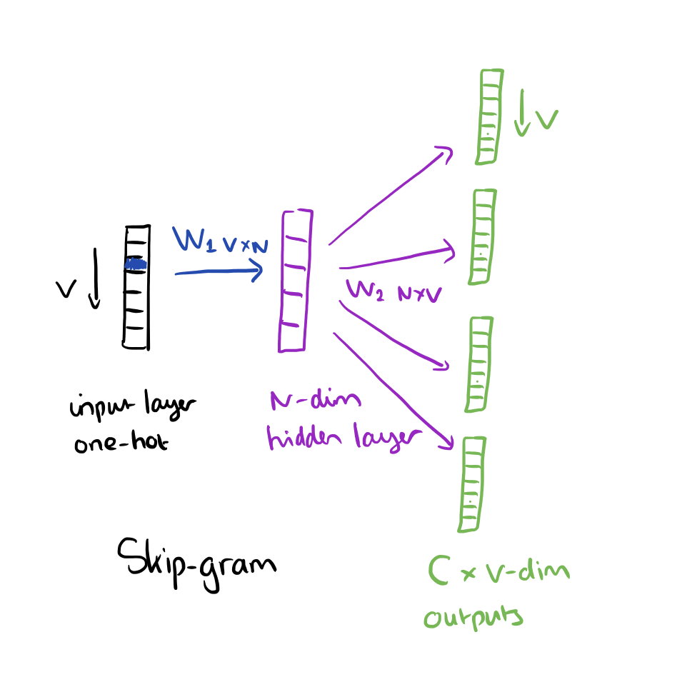
Predict the context in which the word is likely to appear.
- CBOW: several times faster to train than the skipgram, slightly better accuracy for the frequent words
- skipgram: works well with small amount of the training data, gives good representations even for rare words
CBOW
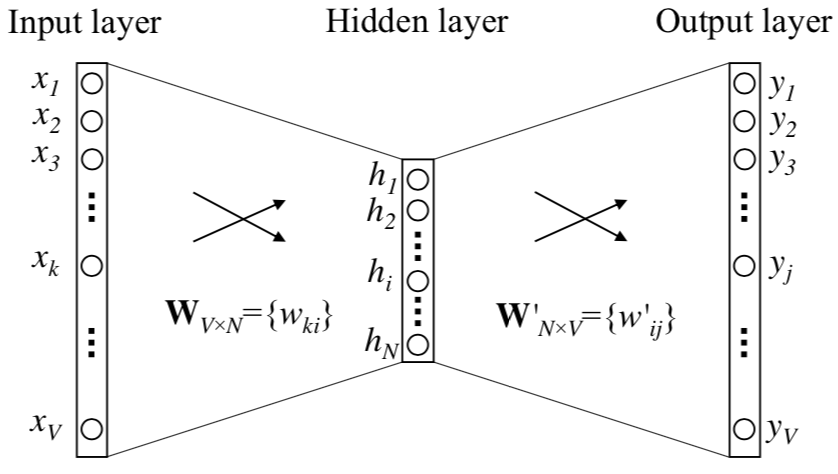
Input neurons give a one hot representation of the context (a single word).
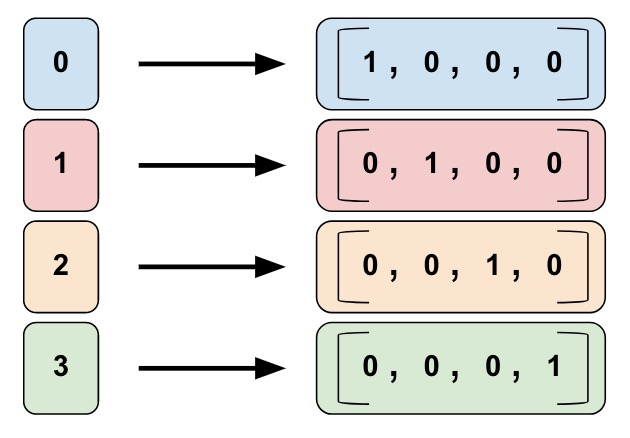
Hidden neurons give an embedding of the input as a dense vector in \(\mathbb{R}^N\) by picking a row from the connection matrix: \[ h = W^Tx = W^T_{(k,\cdot)} =: v^T_{w_I} \] assuming that the input is a sparse vector with a single 1 entry in the k-th component.
Output layer neurons compute a posterior multinomial probability distribution over the missing word given its context. This is done in two stages.
First, the \(N \times V\) connection matrix \(W'\) between hidden and output layers is applied to give a score \(u_j := v'^T_{w_j}h\), where \(v'_{w_j}\) is the j-th column of the \(W'\) matrix.
Second, a nonlinear (softmax) transformation \(y_j := p(w_j|w_I) = \frac{e^{u_j}}{\sum_{j'=1}^V e^{u_{j'}}}\) is used to obtain the output distribution.
complete model
\[ p(w_j|w_I) = \frac{e^{v'^T_{w_j}v_{w_I}}}{\sum_{j'=1}^V e^{v'^T_{w_{j'}}v_{w_I}}} \]
training
\[ \max p(w_O|w_I) = \max y_{j^*} \]
\[ \max \log y_{j^*} = \max \left( u_{j^*} - \log \sum_{j' = 1}^{V} e^{u_{j'}} \right) \]
Equivalently, minimize the negative log likelihood loss \(E = -\log p(w_O|w_I)\), with \(j^*\) being the index of the target word. This loss can also be understood as a cross entropy measure between the two distributions.
gradient: hidden/output
\[
\frac{\partial E}{\partial w'_{ij}} = \frac{\partial E}{\partial u_j} \frac{\partial u_j}{\partial w'_{ij}} = e_j \cdot h_i
\]
where \(e_j := y_j - t_j\) and \(t_j\) is the one-hot vector \(\mathbb{1}(j=j^*)\)
update equation
\[ w'_{ij} \longleftarrow w'_{ij} - \eta \cdot e_j \cdot h_i \]
\[ \forall_{j=1,\dots,V}, v'_{w_j} \longleftarrow v'_{w_j} - \eta \cdot e_j \cdot h \]
intuition
We go through every example, comparing its output probability with the expected output. If the model overestimated (\(y_j > t_j\)) then a portion of the hidden vector (\(h = v_{w_I}\)) is subtracted from the prediction embedding (\(v'_{w_j}\)), making those two vectors further (in terms of inner product) apart.
If the model underestimated (\(y_j < t_j\)), which can only happen if the target has a 1 in position j), we add some part of the hidden vector, making the vectors closer. The closer \(y_j\) is to \(t_j\), the smaller the change will be.
We can think of \(v_{w}\) and \(v'_{w}\) as two different representations of the word w. The difference is related to whether we think of w as a context around some other word, or as the word within some context.
gradient: input/hidden
\[ \frac{\partial E}{\partial w_{ki}} = \frac{E}{\partial h_i} \cdot \frac{\partial h_i}{\partial w_{ki}} = \mathcal{E}_i \cdot x_k \]
\[ \mathcal{E}_i := \frac{\partial E}{\partial h_i} = \sum_{j=1}^{V} \frac{\partial E}{\partial u_j} \cdot \frac{\partial u_j}{\partial h_i} = \sum_{j=1}^{V} e_j \cdot w'_{ij} \]
\[
\frac{\partial E}{\partial W} = x \otimes \mathcal{E} = x \mathcal{E}^T
\]
which is a \(V \times N\) matrix with only one row non-zero (since only one component of x is non-zero)
update equation
\[ v_{w_I} \longleftarrow v_{w_I} - \eta \mathcal{E}^T \]
intuition
The \(\mathcal{E}\) term can be understood as a sum of output vectors of all words in the vocabulary, weighted by their prediction error. Similarly as in the hidden/output case interpretation, the input and output vectors of a word are either being pulled apart or closer together.
We can imagine a competition between two forces at play. The output vector of a word w is pulled in various directions by the input vectors of its coocurring neighbors, and the input vectors are are being pulled by the output vectors. In this interpretation we can imagine a graph with nodes being words, and strings of various strength between them. Eventually this evolving system settles near an equilibrium, because as we've seen the updates die out closer to the energy (loss) well.
skipgram
probabilistic interpretation
\[ \DeclareMathOperator*{\argmax}{arg\,max} \underset{\theta}{\argmax} \underset{w \in T}\prod \left[ \underset{c \in C(w)}{\prod} p(c | w; \theta) \right] \]
i.e. set the weights of the neural network in order to maximize the probability of the observed data (context c of a word w, for each occurrence of the word in the corpus text T, for each word w)
alternative form
\[ \DeclareMathOperator*{\argmax}{arg\,max} \underset{\theta}{\argmax} \underset{(w, c) \in D}{\prod} p(c | w; \theta) \]
D - dataset of all word+context pairs extracted from the corpus
softmax
\[ p(c | w; \theta) = \frac{e^{v_c \cdot v_w}}{\sum_{c' \in C} e^{v_{c'} \cdot v_w}} \]
here \(v_c\) and \(v_w\) are distributed vector representations of c and w respectively, and C is the set of all contexts
optimization objective
\[ \DeclareMathOperator*{\argmax}{arg\,max} \underset{\theta}{\argmax} \underset{(w, c) \in D}{\sum} \log p(c | w; \theta) \]
\[ \underset{(w, c) \in D}{\sum} \left( v_c \cdot v_w - \log \underset{c'}{\sum} e^{v_{c'} \cdot v_w} \right) \]
In machine learning, we often take logs to make optimization objectives easier to deal with. This doesn't affect the outcome since logarithm is a monotonous function.
empirical fact
Optimizing the above objective results in useful word embeddings!
problem
The internal summation of exponentials coming from the normalizing constant (this is a common issue in ML) is hard to compute because there are many contexts, and exponentials are computationally expensive.
Two common solutions:
- negative sampling
- hierarchical softmax
negative sampling
We'll discuss only the first solution as it is simpler and often used in practice.
Consider a pair (w, c), where w is some word and c is some arbitrary context.
Given a corpus T we generate a dataset D of word+context pairs like before. Let us now consider two probabilities (D is used as an indicator random variable below):
-
w appears in the context c within corpus T
\(p(D = 1 | w, c)\) -
w does not appear in the context c within corpus T
\(p(D = 0 | w, c) = 1 - p(D = 1 | w, c)\)
objective
\[ \DeclareMathOperator*{\argmax}{arg\,max} \underset{\theta}{\argmax} \left[ \underset{(w, c) \in D}{\prod} p(D=1 | c,w; \theta) \right] \]
↓
\[
\DeclareMathOperator*{\argmax}{arg\,max}
\underset{\theta}{\argmax} \left[ \log \left( \underset{(w, c) \in D}{\prod} p(D=1 | c,w; \theta) \right) \right]
\]
↓
\[
\DeclareMathOperator*{\argmax}{arg\,max}
\underset{\theta}{\argmax} \left[ \underset{(w, c) \in D}{\sum} \log \left( p(D=1 | c,w; \theta) \right) \right]
\]
probabilistic model
\[ p(D = 1 | w, c; \theta) = \frac{1}{1 + e^{- \left( v_c \cdot v_w \right)}} \]
need to solve
\[ \DeclareMathOperator*{\argmax}{arg\,max} \underset{\theta}{\argmax} \left[ \underset{(w, c) \in D}{\sum} \log \frac{1}{1 + e^{- \left( v_c \cdot v_w \right)}} \right] \]
degenerate solutions
We can easily find a trivial set of solutions to this optimization problem.
- set \(\theta\) so that \(\forall_{(w,c) \in D}, p(D = 1 | w, c; \theta) = 1\)
- easily done by choosing any \(\theta\) so the inner product \(v_c \cdot v_w\) is large for all examples
solution
The problem above arises because our optimization objective only focuses on positive examples - we are maximizing probability of the true dataset without thinking about the negative examples (coming from the made up dataset).
Negatie Sampling:
Explicitly consider negative examples in the optimization objective.
improved objective
\[ \DeclareMathOperator*{\argmax}{arg\,max} \underset{\theta}{\argmax} \left[ \underset{(w, c) \in D}{\prod} p(D=1 | c,w; \theta) \underset{(w, c) \in D'}{\prod} p(D=0 | c,w; \theta) \right] \]
Here D' is a generated set of negative examples. In practice, instead of constructing a perfect negative set we can just sample random words from the corpus to generate the examples (because the probability of obtaining positive examples in a random process is very low).
\[ \DeclareMathOperator*{\argmax}{arg\,max} \underset{\theta}{\argmax} \left[ \underset{(w, c) \in D}{\prod} p(D=1 | c,w; \theta) \underset{(w, c) \in D'}{\prod} p(D=0 | c,w; \theta) \right] \]
↓
\[
\DeclareMathOperator*{\argmax}{arg\,max}
\underset{\theta}{\argmax} \left[ \underset{(w, c) \in D}{\prod} p(D=1 | c,w; \theta) \underset{(w, c) \in D'}{\prod} \left( 1 - p(D=1 | c,w; \theta) \right) \right]
\]
↓
\[
\DeclareMathOperator*{\argmax}{arg\,max}
\underset{\theta}{\argmax} \left[ \underset{(w, c) \in D}{\sum} \log p(D=1 | c,w; \theta) + \underset{(w, c) \in D'}{\sum} \log \left( 1 - p(D=1 | c,w; \theta) \right) \right]
\]
\[ \DeclareMathOperator*{\argmax}{arg\,max} \underset{\theta}{\argmax} \left[ \underset{(w, c) \in D}{\sum} \log \frac{1}{1 + e^{- \left( v_c \cdot v_w \right)}} + \underset{(w, c) \in D'}{\sum} \log \left( 1 - \frac{1}{1 + e^{- \left( v_c \cdot v_w \right)}} \right) \right] \]
↓
\[
\DeclareMathOperator*{\argmax}{arg\,max}
\underset{\theta}{\argmax} \left[ \underset{(w, c) \in D}{\sum} \log \frac{1}{1 + e^{- \left( v_c \cdot v_w \right)}} + \underset{(w, c) \in D'}{\sum} \log \left(\frac{1}{1 + e^{v_c \cdot v_w}} \right) \right]
\]
↓
\[
\DeclareMathOperator*{\argmax}{arg\,max}
\underset{\theta}{\argmax} \left[ \underset{(w, c) \in D}{\sum} \log \sigma \left( v_c \cdot v_w \right) + \underset{(w, c) \in D'}{\sum} \log \sigma \left( - v_c \cdot v_w \right) \right]
\]
some intuition
- Optimizing this objective aims at increasing the inner products for word and context vectors that came from the corpus data (positive examples), and decreasing them for patterns that don't appear in the corpus (negative examples).
- This leads to words that share many contexts having similar representations (and also contexts that share many words having similar representations).
- The distributional hypothesis in computational linguistics suggests that words with similar contexts have similar semantic and syntactic properties. This makes intuitive sense in the context of language pragmatics.
linear structure in embedding spaces
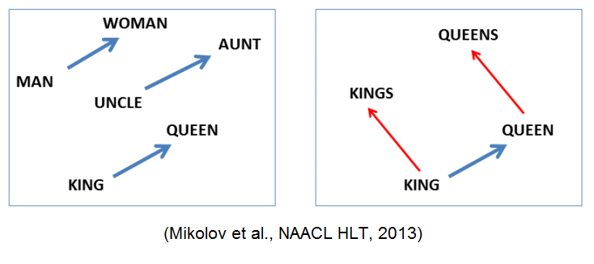
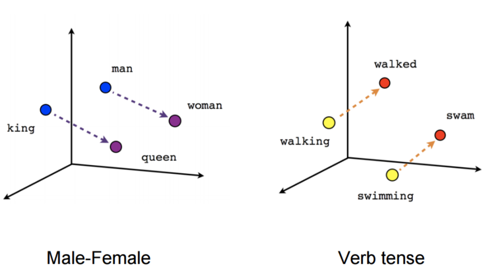
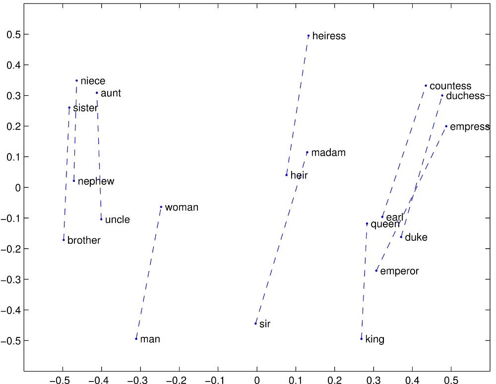
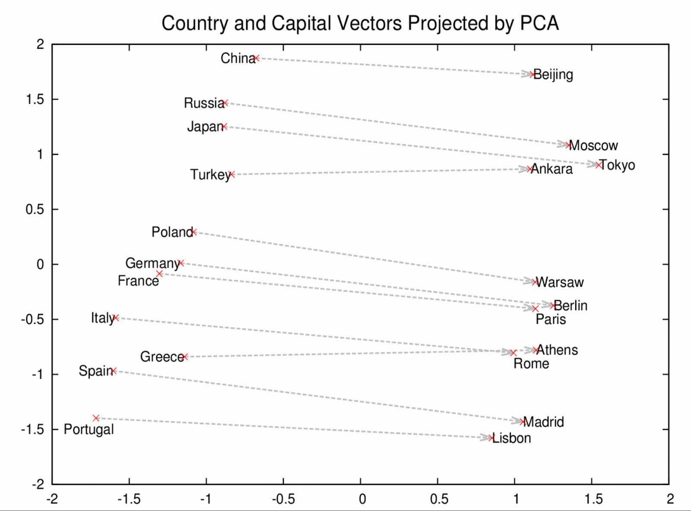
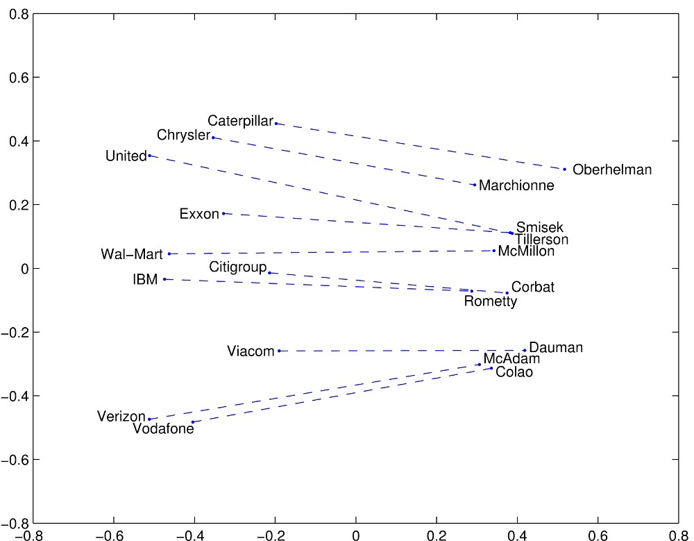
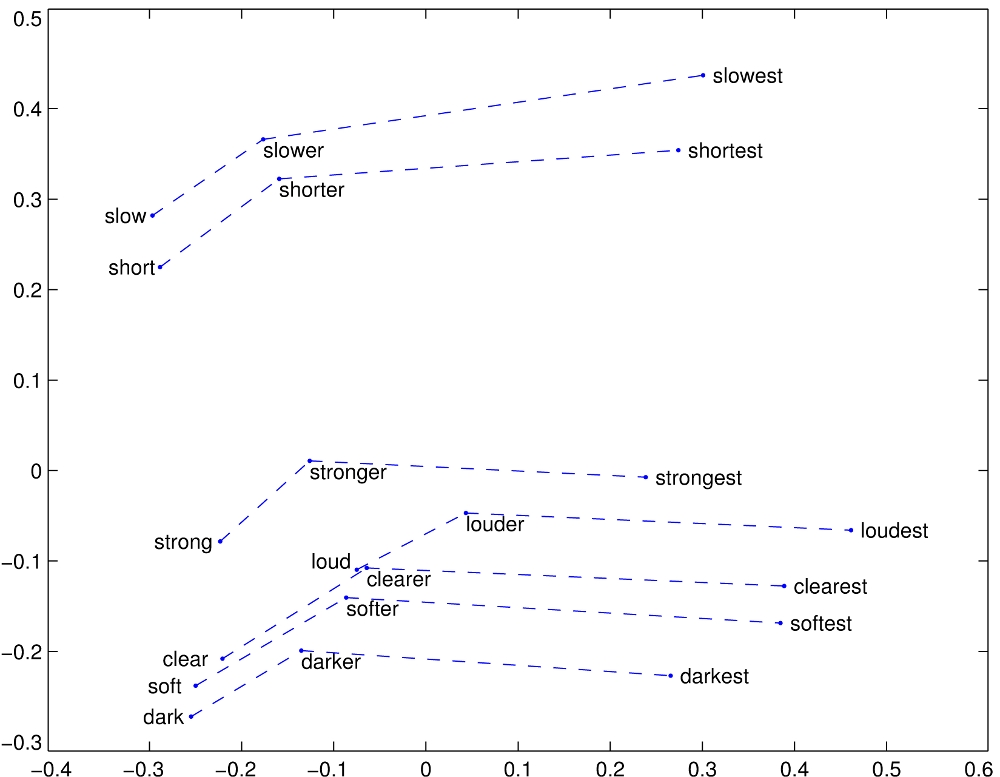